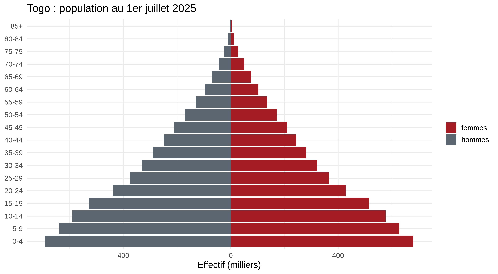
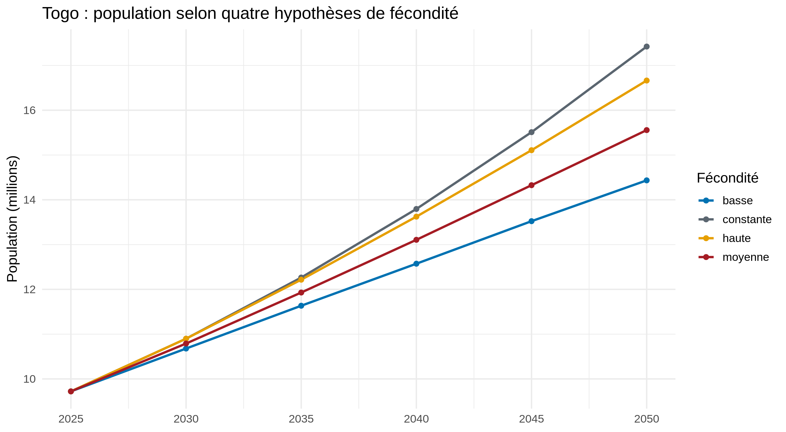

source("projet-projection/R/fonctions_projection.R", encoding = "UTF-8")
library(ggplot2)
d <- lire_donnees("projet-projection/donnees")
names(d)[1] "pop" "mx" "isf" "calend" "rmn" "mig" "onu_pop"
[8] "onu_e0" Jour 4 · Prospective et scénarios — Formation régionale UEMOA · Ouagadougou, 26 novembre 2026
Vissého Adjiwanou — Département de sociologie, UQAM · SSAPOPLAB
projet-projection/, à copier depuis la clé USB. Il contient les données des huit pays, les fonctions R, les simulations probabilistes et le classeur Excel. Aucune connexion internet n’est nécessaire.dplyr, tidyr, readr, purrr, ggplot2 et forcats, tous inclus dans tidyverse.À la fin du labo, vous serez capables de :
| Horaire | Étape | Durée |
|---|---|---|
| 14 h 00 | 1. Ouvrir le projet et charger les données | 10 min |
| 14 h 10 | 2. Les intrants d’un pays | 15 min |
| 14 h 25 | 3. Un pas de projection, à la main | 15 min |
| 14 h 40 | 4. Projeter à 2050 sous quatre scénarios | 15 min |
| 14 h 55 | 5. Lire l’incertitude | 15 min |
| 15 h 10 | 6. Des effectifs aux besoins, puis la version Excel | 20 min |
Ouvrez projet-projection/projet-projection.Rproj dans RStudio. Le dossier contient :
| Dossier ou fichier | Contenu |
|---|---|
donnees/ |
Huit fichiers CSV tirés du WPP 2024 pour les huit pays (voir la page Données) |
R/fonctions_projection.R |
Les fonctions de la méthode des composantes, commentées |
tp1_projection.R |
Le script du TP : une seule ligne à modifier, le nom du pays |
simulations/bayespop_uemoa.rds |
1 000 trajectoires probabilistes par pays, déjà calculées |
excel/TP1_projection_UEMOA.xlsx |
La même projection dans Excel |
modeles/ |
Modèle de fichier pour utiliser votre propre recensement |
Dans ce document, les chemins commencent par projet-projection/. Dans RStudio, une fois le projet ouvert, vous les écrirez sans ce préfixe.
[1] "pop" "mx" "isf" "calend" "rmn" "mig" "onu_pop"
[8] "onu_e0" Choisissons un pays. Pendant la démonstration, nous prenons le Togo ; chaque équipe refera la même chose pour son pays.
L’objet intr rassemble tout ce dont la projection a besoin : la population de départ (P0), les survies, le calendrier de la fécondité, la migration, le rapport de masculinité et quatre trajectoires de l’ISF.
d$pop %>%
filter(pays == !!pays, annee == 2025) %>%
mutate(age = forcats::fct_collapse(factor(age, GROUPES), "85+" = GROUPES[18:21]),
pop = if_else(sexe == "hommes", -pop_milliers, pop_milliers)) %>%
ggplot(aes(pop, age, fill = sexe)) +
geom_col(width = 0.9) +
scale_x_continuous(labels = abs) +
scale_fill_manual(values = c(femmes = "#a51c24", hommes = "#5b6670")) +
labs(title = paste(pays, ": population au 1er juillet 2025"),
x = "Effectif (milliers)", y = NULL, fill = NULL) +
theme_minimal(base_size = 13)
Dans d$pop, la colonne statut distingue les estimations (jusqu’en 2020) et les projections (à partir de 2025). La population de 2025 est donc déjà une projection de l’ONU à partir de son estimation de 2020.
| periode | moyenne | basse | haute | constante |
|---|---|---|---|---|
| 2025-2030 | 3.93 | 3.63 | 4.22 | 4.22 |
| 2030-2035 | 3.68 | 3.25 | 4.11 | 4.22 |
| 2035-2040 | 3.47 | 2.96 | 3.96 | 4.22 |
| 2040-2045 | 3.29 | 2.78 | 3.78 | 4.22 |
| 2045-2050 | 3.12 | 2.62 | 3.62 | 4.22 |
Le calendrier (la part des naissances par groupe d’âge) est celui de l’ONU, identique pour les quatre scénarios :
Le fichier mortalite_mx.csv donne les taux de mortalité par âge. La fonction table_mortalite() en tire une table abrégée :
| age_debut | mx | qx | lx | Lx | Tx | ex |
|---|---|---|---|---|---|---|
| 0 | 0.0349 | 0.0339 | 1.0000 | 0.9712 | 63.8535 | 63.8535 |
| 1 | 0.0039 | 0.0155 | 0.9661 | 3.8266 | 62.8823 | 65.0879 |
| 5 | 0.0030 | 0.0149 | 0.9511 | 4.7203 | 59.0557 | 62.0889 |
| 10 | 0.0016 | 0.0081 | 0.9370 | 4.6660 | 54.3354 | 57.9881 |
| 15 | 0.0026 | 0.0128 | 0.9294 | 4.6172 | 49.6694 | 53.4412 |
| 20 | 0.0033 | 0.0166 | 0.9175 | 4.5492 | 45.0522 | 49.1039 |
| 80 | 0.1718 | 0.5765 | 0.2437 | 0.8175 | 1.1640 | 4.7772 |
| 85 | 0.2684 | 0.7387 | 0.1032 | 0.2840 | 0.3466 | 3.3581 |
| 90 | 0.4162 | 0.8752 | 0.0270 | 0.0567 | 0.0625 | 2.3189 |
| 95 | 0.5699 | 0.9421 | 0.0034 | 0.0056 | 0.0058 | 1.7326 |
| 100 | 0.7278 | 1.0000 | 0.0002 | 0.0003 | 0.0003 | 1.3740 |
Vérification : l’espérance de vie calculée (ex à l’âge 0) doit être proche de celle publiée par l’ONU.
calculee onu
63.85 63.94 On passe ensuite aux rapports de survie quinquennaux, S(x) = 5L(x+5) / 5L(x) :
# A tibble: 2 × 2
sexe solde_milliers
<chr> <dbl>
1 femmes -34.4
2 hommes -34.0Le solde de la période est réparti par âge et par sexe selon l’hypothèse de l’ONU.
Faisons une seule période, de 2025 à 2030, en suivant les étapes du cours.
naissances_2025_2030 population_2030
1526.368 10790.214 Comparons groupe par groupe avec la projection de l’ONU pour 2030 :
onu_2030 <- d$pop %>% filter(pays == !!pays, annee == 2030, sexe == "femmes") %>%
mutate(age = factor(age, GROUPES)) %>% arrange(age)
tibble(age = GROUPES, notre_calcul = P30$femmes, onu = onu_2030$pop_milliers) %>%
mutate(ecart_pct = 100 * (notre_calcul / onu - 1)) %>%
slice(1:12) %>% knitr::kable(digits = 2)| age | notre_calcul | onu | ecart_pct |
|---|---|---|---|
| 0-4 | 718.65 | 721.00 | -0.33 |
| 5-9 | 666.34 | 664.15 | 0.33 |
| 10-14 | 619.31 | 619.47 | -0.03 |
| 15-19 | 567.37 | 569.15 | -0.31 |
| 20-24 | 500.14 | 501.04 | -0.18 |
| 25-29 | 415.35 | 414.16 | 0.29 |
| 30-34 | 355.24 | 354.48 | 0.22 |
| 35-39 | 312.43 | 312.12 | 0.10 |
| 40-44 | 273.14 | 272.91 | 0.08 |
| 45-49 | 236.09 | 236.07 | 0.01 |
| 50-54 | 200.71 | 200.77 | -0.03 |
| 55-59 | 161.92 | 162.06 | -0.09 |
Les écarts sont de quelques dixièmes de pour cent : notre méthode reproduit celle de l’ONU. Les petits écarts viennent de la table de mortalité et de la façon d’insérer les migrants.
Ouvrez R/fonctions_projection.R et retrouvez, dans pas_projection(), les lignes qui correspondent aux étapes 1 à 5 du cours.
| scenario | annee | pop_totale | pct_moins_15 | rapport_dependance | naissances_an |
|---|---|---|---|---|---|
| basse | 2025 | 9721.6 | 39.2 | 73.7 | NA |
| basse | 2035 | 11634.3 | 34.5 | 62.5 | 286.4 |
| basse | 2050 | 14434.0 | 29.5 | 54.1 | 302.7 |
| constante | 2025 | 9721.6 | 39.2 | 73.7 | NA |
| constante | 2035 | 12263.6 | 37.9 | 71.3 | 372.4 |
| constante | 2050 | 17421.8 | 38.1 | 74.5 | 512.7 |
| haute | 2025 | 9721.6 | 39.2 | 73.7 | NA |
| haute | 2035 | 12215.7 | 37.6 | 70.6 | 362.5 |
| haute | 2050 | 16663.1 | 35.5 | 67.7 | 438.5 |
| moyenne | 2025 | 9721.6 | 39.2 | 73.7 | NA |
| moyenne | 2035 | 11929.1 | 36.1 | 66.6 | 325.0 |
| moyenne | 2050 | 15556.3 | 32.7 | 61.1 | 369.9 |
Avant d’interpréter, on vérifie toujours que le scénario moyen reproduit la variante moyenne de l’ONU.
| annee | notre_projection | onu_variante_moyenne | ecart_pct |
|---|---|---|---|
| 2025 | 9721.61 | 9721.61 | 0.00 |
| 2030 | 10790.21 | 10793.00 | -0.03 |
| 2035 | 11929.13 | 11937.68 | -0.07 |
| 2040 | 13106.42 | 13121.35 | -0.11 |
| 2045 | 14325.91 | 14347.51 | -0.15 |
| 2050 | 15556.29 | 15584.78 | -0.18 |
ggplot(ind, aes(annee, pop_totale / 1000, colour = scenario)) +
geom_line(linewidth = 1) + geom_point() +
scale_colour_manual(values = COULEURS_SCENARIOS) +
labs(title = paste(pays, ": population selon quatre hypothèses de fécondité"),
x = NULL, y = "Population (millions)", colour = "Fécondité") +
theme_minimal(base_size = 13)
Si votre INS a ses propres hypothèses, la fonction isf_logistique() construit une trajectoire de l’ISF à partir de trois choix : le niveau final, l’année de baisse la plus rapide et la vitesse de baisse.
[1] 3.92 3.61 3.31 3.06 2.87# A tibble: 1 × 3
scenario pop_totale pct_moins_15
<chr> <dbl> <dbl>
1 personnalise 15191. 31.3| annee | mediane | pop_80_inf | pop_80_sup | pop_95_inf | pop_95_sup |
|---|---|---|---|---|---|
| 2030 | 10681 | 10213 | 11176 | 9969 | 11440 |
| 2040 | 13002 | 11825 | 14309 | 11191 | 14982 |
| 2050 | 15463 | 13330 | 17897 | 12329 | 19149 |
| 2075 | 21428 | 15520 | 28978 | 13152 | 33164 |
| 2100 | 26225 | 16146 | 42500 | 12647 | 53618 |
Il y a 95 chances sur 100 que la population du Togo en 2050 soit comprise entre la borne inférieure et la borne supérieure de l’intervalle à 95 %.
bayesPopLe fichier simulations/bayespop_uemoa.rds contient, pour chaque pays et chaque année de 2025 à 2100, 1 000 trajectoires déjà calculées avec les paquets bayesTFR et bayesPop. Dans ces simulations, la fécondité est aléatoire ; la mortalité et la migration suivent les hypothèses moyennes de l’ONU. Vous n’avez pas besoin d’installer ces paquets ni de faire tourner leurs chaînes, qui prennent environ une heure.
[1] "trajectoires" "resume" "note" # A tibble: 6 × 8
pays annee trajectoire pop_totale pop_0_14 pop_15_64 pop_65_plus age_primaire
<chr> <int> <int> <dbl> <dbl> <dbl> <dbl> <dbl>
1 Togo 2050 1 16266. 5727. 9687. 851. 2202.
2 Togo 2050 2 15801. 5202. 9748. 851. 2109.
3 Togo 2050 3 17156. 6365. 9940. 851. 2495.
4 Togo 2050 4 15819. 5268. 9700. 851. 2097.
5 Togo 2050 5 17164. 6171. 10142. 851. 2330.
6 Togo 2050 6 17170. 6468. 9851. 851. 2480.Chaque ligne est une trajectoire possible. Les quantiles se calculent sur les trajectoires :
# A tibble: 3 × 4
annee q025 mediane q975
<int> <dbl> <dbl> <dbl>
1 2030 10537. 10879. 11184.
2 2050 14213. 16103. 17912.
3 2075 17347. 23219. 30326.L’intérêt des trajectoires : on peut calculer la probabilité de n’importe quel événement. Par exemple, la probabilité que le nombre d’enfants d’âge primaire augmente de plus de 20 % entre 2025 et 2040 :
# A tibble: 1 × 1
probabilite
<dbl>
1 0.714Elles ont été produites avec des chaînes MCMC courtes, pour la formation. Leurs médianes de 2050 dépassent celles de l’ONU de 2 à 8 % selon le pays, et leurs intervalles sont en général plus étroits, parce que seule la fécondité y est aléatoire. Elles servent à apprendre à raisonner sur des trajectoires ; pour un chiffre officiel, utilisez les intervalles publiés par l’ONU (onu_population_totale.csv). La règle reste la même : les quantiles d’une somme ou d’un ratio se calculent sur les trajectoires, jamais en additionnant des quantiles.
La fonction besoins() applique des normes aux effectifs projetés. Ses paramètres sont des hypothèses de politique, à fixer avec le ministère concerné.
| scenario | annee | eleves_primaire | enseignants | salles_classe | nouveaux_actifs_an |
|---|---|---|---|---|---|
| basse | 2025 | 1333.4 | 29.6 | 26.7 | NA |
| basse | 2035 | 1426.4 | 31.7 | 28.5 | 103.9 |
| basse | 2050 | 1521.5 | 33.8 | 30.4 | 89.5 |
| constante | 2025 | 1333.4 | 29.6 | 26.7 | NA |
| constante | 2035 | 1582.6 | 35.2 | 31.7 | 103.9 |
| constante | 2050 | 2286.8 | 50.8 | 45.7 | 141.5 |
| haute | 2025 | 1333.4 | 29.6 | 26.7 | NA |
| haute | 2035 | 1582.6 | 35.2 | 31.7 | 103.9 |
| haute | 2050 | 2077.0 | 46.2 | 41.5 | 135.4 |
| moyenne | 2025 | 1333.4 | 29.6 | 26.7 | NA |
| moyenne | 2035 | 1505.6 | 33.5 | 30.1 | 103.9 |
| moyenne | 2050 | 1802.7 | 40.1 | 36.1 | 112.8 |
Les effectifs sont en milliers : enseignants = 40,1 veut dire 40 100 enseignants.
La phrase pour le décideur se construit à partir de l’écart entre deux scénarios :
e <- bes %>% filter(annee == 2035, scenario %in% c("basse", "constante")) %>%
select(scenario, enseignants) %>% tibble::deframe()
sprintf("En 2035, il faudrait %s enseignants du primaire si la fécondité restait à son niveau actuel, contre %s si elle baissait selon la variante basse de l'ONU, soit %s de plus.",
format(round(1000 * e[["constante"]], -2), big.mark = " "),
format(round(1000 * e[["basse"]], -2), big.mark = " "),
format(round(1000 * (e[["constante"]] - e[["basse"]]), -2), big.mark = " "))[1] "En 2035, il faudrait 35 200 enseignants du primaire si la fécondité restait à son niveau actuel, contre 31 700 si elle baissait selon la variante basse de l'ONU, soit 3 500 de plus."tp1_projection.RTout ce que nous venons de faire tient dans tp1_projection.R. Une seule ligne change d’un pays à l’autre :
Le script écrit dans resultats/ trois graphiques (scénarios, pyramides, élèves du primaire) et trois tableaux CSV (indicateurs, besoins, projection par âge et sexe), prêts pour la note pays.
Le classeur excel/TP1_projection_UEMOA.xlsx fait la même projection avec des formules visibles, pour les participants qui préfèrent Excel.
| Feuille | Rôle |
|---|---|
Lisez-moi |
Mode d’emploi |
Paramètres |
Choix du pays (liste déroulante), du scénario de fécondité, de la migration et des normes de scolarisation |
Projection |
Calcul pas à pas, 2025 à 2050, par sexe et âge quinquennal |
Résultats |
Indicateurs, besoins et graphique |
Données |
Intrants des huit pays (ne pas modifier) |
On change le pays dans la cellule jaune de Paramètres, et tout se recalcule. Le classeur donne les mêmes résultats que le script R, à l’arrondi près.
Chaque équipe choisit son outil (R ou Excel), projette son pays, puis suit la feuille de travail en équipe.